Numbers that hold up.
Every figure on this page comes from the repository's reports. The test set was held out from the start and never touched during training or tuning.
Five-fold stratified cross-validation.
7,389 flows (train plus validation), with the 15% test split kept out. LightGBM won on accuracy, F1 and latency together.
| Classifier | Accuracy | Macro F1 | Fit time | Latency |
|---|---|---|---|---|
| Random Forest 300 trees | 93.90% ± 0.88% | 0.9042 ± 0.0141 | 1.08 s | 3.8 ms |
| XGBoost hist boosted | 95.18% ± 0.48% | 0.9217 ± 0.0103 | 5.76 s | 3.2 ms |
| LightGBM selected | 95.61% ± 0.57% | 0.9268 ± 0.0128 | 3.01 s | 2.31 ms |
Per-class F1.
VoIP is nearly perfect because its 20 ms cadence is unmistakable. Streaming is the honest weak spot, explained in its own report.
| Class | Precision | Recall | F1 | Support |
|---|---|---|---|---|
| VoIP | 1.000 | 0.998 | 0.999 | 424 |
| P2P | 0.972 | 0.986 | 0.979 | 141 |
| Browsing | 0.961 | 0.976 | 0.968 | 375 |
| 0.944 | 0.944 | 0.944 | 36 | |
| Chat | 0.954 | 0.932 | 0.943 | 133 |
| File transfer | 0.960 | 0.922 | 0.941 | 129 |
| Streaming | 0.868 | 0.881 | 0.874 | 67 |
| Accuracy | 0.969 | 1305 |
The four PCAPs in the repo.
| Capture | Generated as | Model says | Confidence | README reports | Result |
|---|---|---|---|---|---|
voip_call.pcap | VoIP | VoIP · then Chat 0.1% | 99.87% | VoIP 99.87% | matches |
browsing_https.pcap | Browsing | Chat · then Browsing 12.1% | 87.50% | Browsing 89.24% | misclassified |
file_transfer.pcap | FileTransfer | P2P · then Browsing 36.5% | 54.72% | FileTransfer 91.40% | misclassified |
streaming_video.pcap | Streaming | Browsing · then FileTransfer 0.3% | 99.48% | Browsing 52.3% / Streaming 41.8% | misclassified |
Produced by models/best_model.pkl on data/sample_pcaps at build time. These synthetic captures are short single flows, so they are a smoke test, not the benchmark; the README's figures for them could not be reproduced with the committed model. See real_world_pcap_evaluation.md.
Approach comparison.
| What matters | Deep packet inspection | IP / port rules | Deep learning (CNN / LSTM) | MetaFlow |
|---|---|---|---|---|
| Encrypted traffic (TLS 1.3, QUIC) | ✕ Fails completely | ✕ Port 443 hides everything | ✓ Works | ✓ 96.9% test accuracy |
| Privacy and compliance | ✕ Conflicts with GDPR / HIPAA | ! Privacy concerns | ✓ Preserved | ✓ No payload inspected, ever |
| Raw capture ingestion | ✕ Needs decryption keys | ! Headers only | ! Byte truncation | ✓ Native .pcap / .pcapng flows |
| Port and IP evasion | ✕ Vulnerable | ✕ Easily bypassed | ✓ High | ✓ Rhythm is hard to spoof |
| Inference latency | ✕ 100 to 500 ms | ✓ Under 1 ms | ✕ 15 to 40 ms on GPU | ✓ About 2.3 ms on CPU |
| Explainability | ! Plain logs | ✕ None | ✕ Black box | ✓ Plain-language reasons |
| Deployment cost | ✕ Heavy hardware | ! Cheap but inaccurate | ✕ GPU middleboxes | ✓ Lightweight CPU |
The charts, straight from the repo.
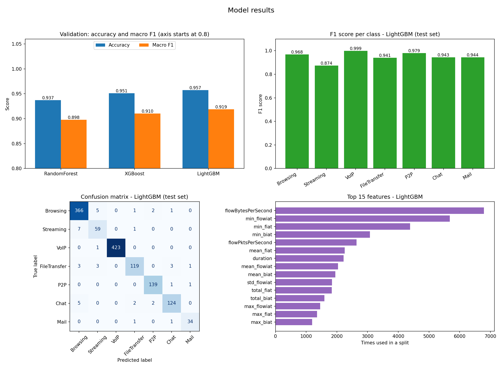
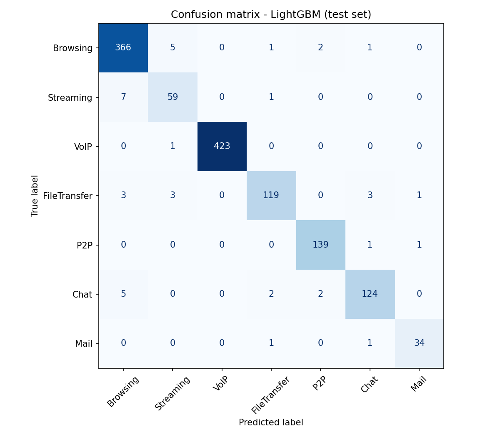
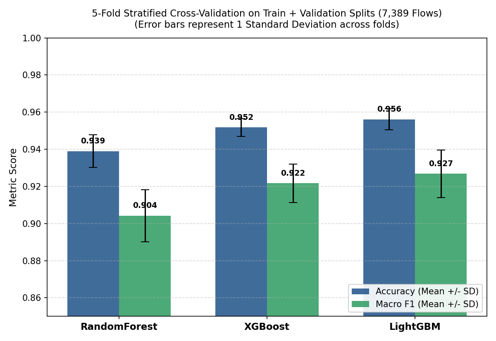
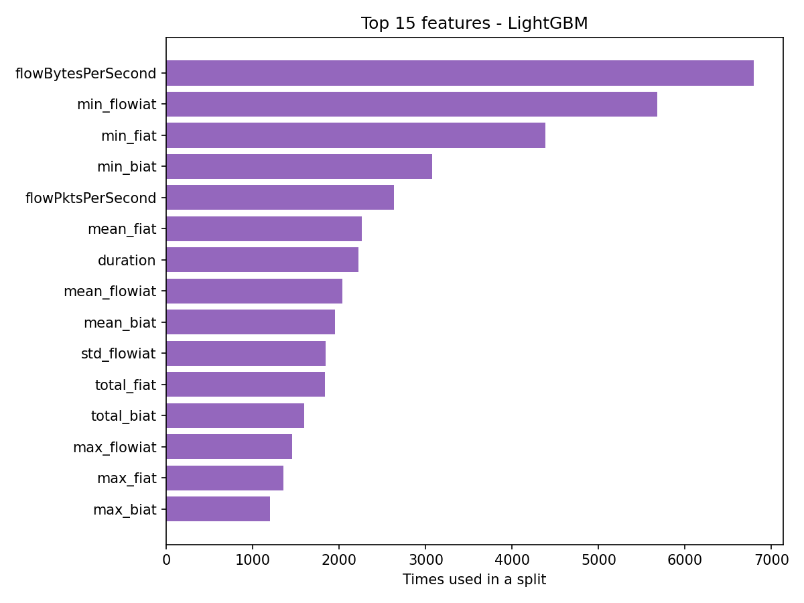
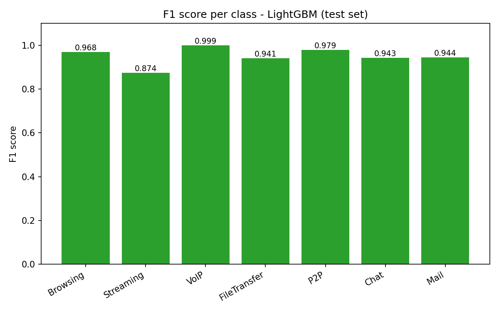
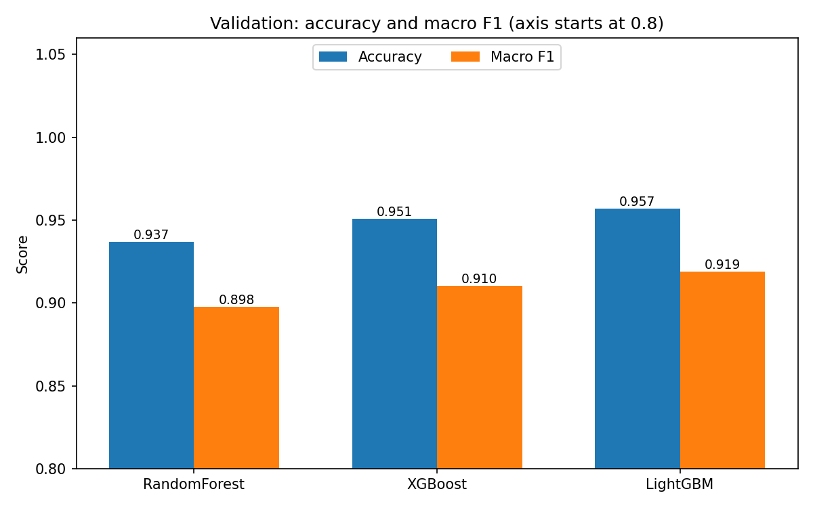
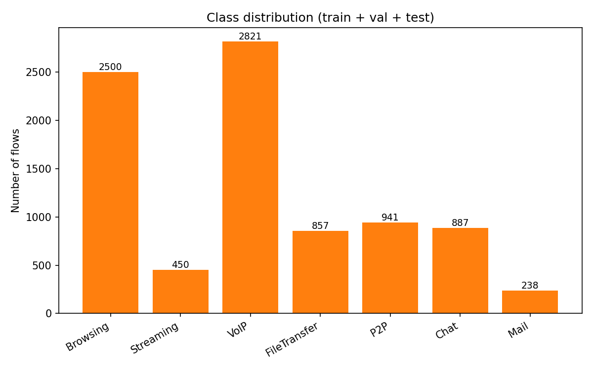
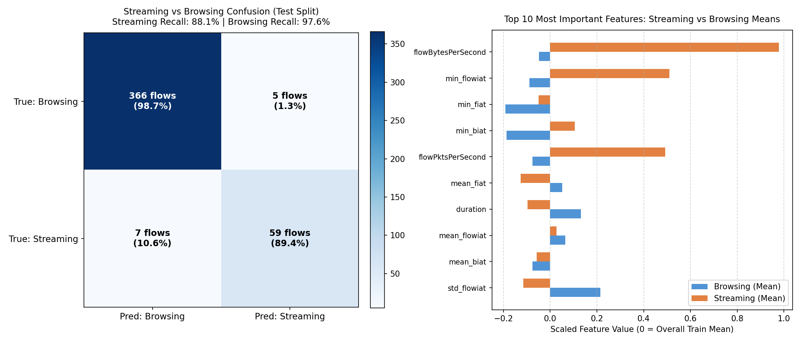
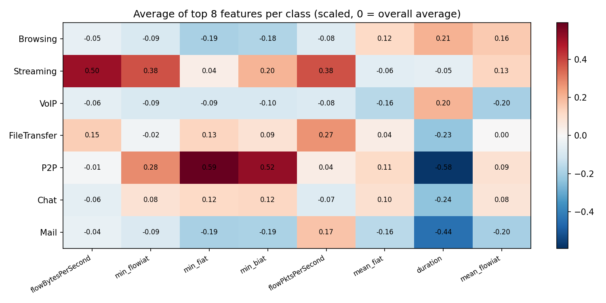
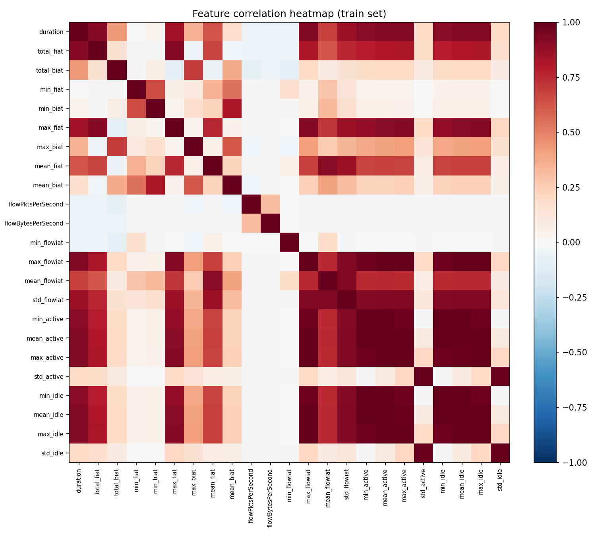
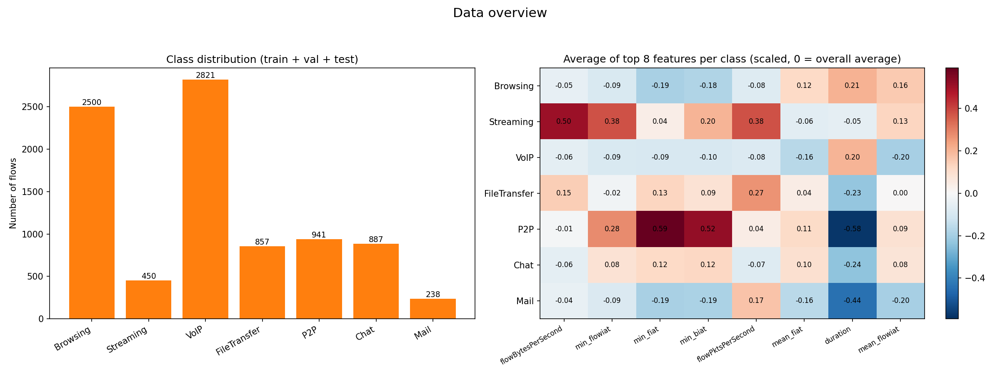
Read the rhythm.
Clone the repo, point it at a capture, and get a labelled, explained flow in about a minute. Everything runs on your machine.